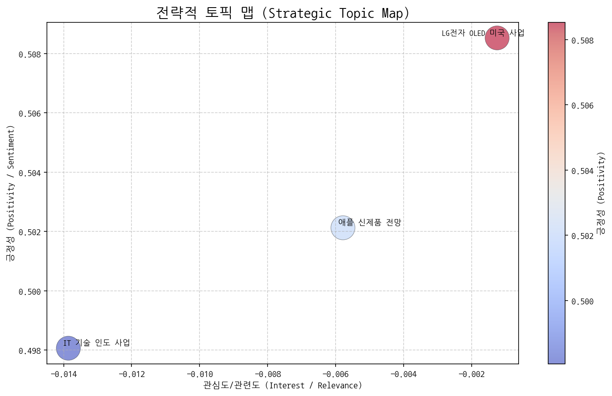
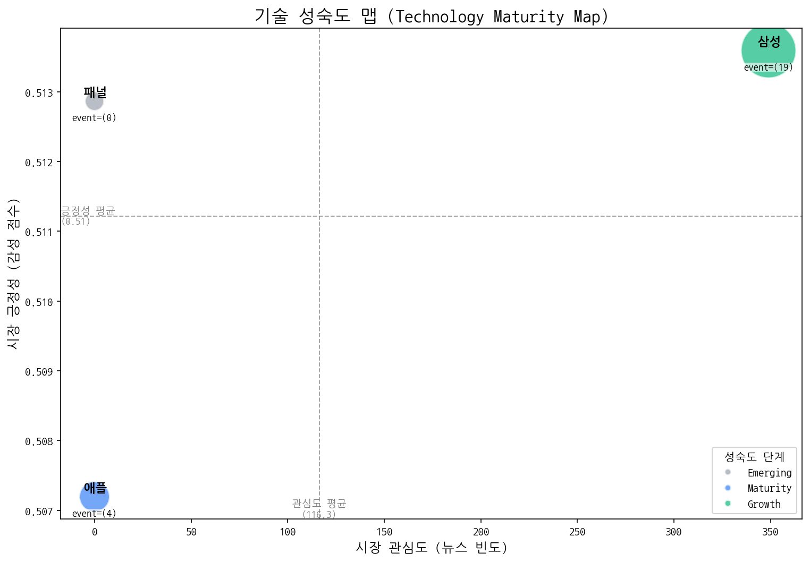
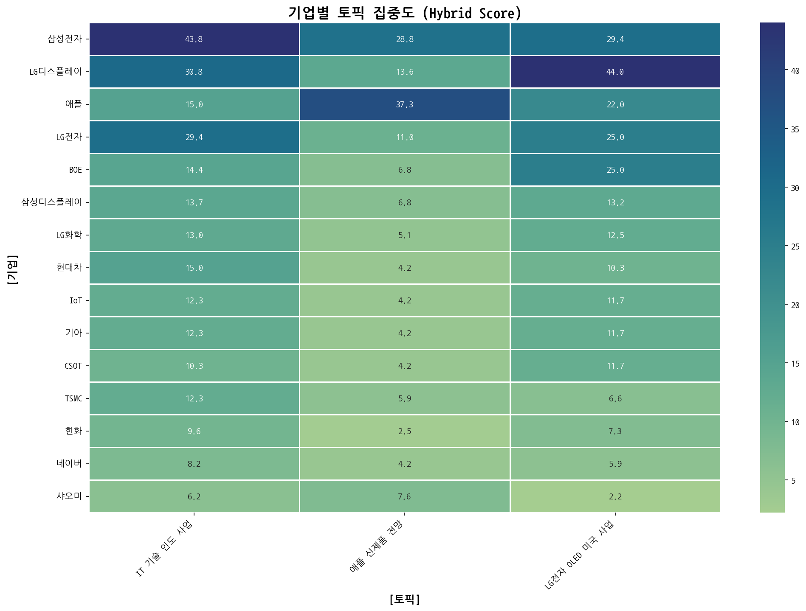
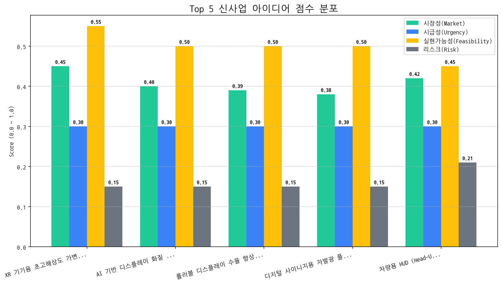

| 토픽명 | 요약 | 핵심 키워드 | |:----------------|:----------------------------------------------------------------|:----------------| | IT 기술 인도 사업 | 삼성전자, LG 등 주요 IT 브랜드의 AI, 반도체, 디스플레이 기술 관련 인도 사업 확장 및 경쟁 심화 전망. | 기술, ai, 디스플레이 | | 애플 신제품 전망 | 애플의 M5 칩, 폴더블폰, AI 기능, 비전 프로 등 차세대 맥북 및 신제품 출시 관련 정보. | 프로, 맥북, 애플 | | LG전자 OLED 미국 사업 | LG전자의 3분기 OLED TV 및 디스플레이 사업 실적, 특히 미국 시장에서의 장비 및 패널 사업 관련 내용. | oled, 디스플레이, 장비 |
| 기술 | 단계 | 판단 근거 | |:-----|:---------|:---------------------------------------------------------------------------------------------------| | 패널 | Emerging | 뉴스 언급 빈도가 0회이고 투자, 출시, 수주 이벤트도 발생하지 않아 시장 관심이 낮으며, 시장 감성 점수 또한 중간 수준으로 초기 단계로 판단됩니다. | | 애플 | Maturity | 최근 뉴스 언급 빈도가 없고, 투자 및 수주 이벤트가 없으며, 시장 감성 점수가 중간 수준인 반면 출시 이벤트만 발생했다는 것은 애플 기술이 성숙 단계에 진입했음을 시사합니다. | | 삼성 | Growth | 뉴스 언급 빈도가 높고, 시장 감성 점수가 중간 수준이며, 출시 이벤트가 투자 이벤트보다 많아 성장기에 있는 것으로 판단됩니다. |
| org | topic_0 | topic_1 | topic_2 |
|---|---|---|---|
| ASUS | 2.73 (1%) | 2.54 (1%) | 0.73 (0%) |
| AUO | 3.42 (1%) | 1.69 (1%) | 2.94 (1%) |
| BMW | 2.73 (1%) | nan | 1.47 (0%) |
| BOE | 14.36 (4%) | 6.78 (3%) | 24.95 (8%) |
| BYD | 1.37 (0%) | nan | nan |
| source | target | weight | rel_type |
|---|---|---|---|
| 기아 | 현대차 | 5 | neutral |
| 삼성전자 | 현대차 | 4 | neutral |
| 기아 | 삼성전자 | 4 | neutral |
| 삼성전자 | 애플 | 3 | rivalry |
| 삼성디스플레이 | 삼성전자 | 3 | partnership |

| 아이디어 | 가치 제안 | 총점 | |:-----------------------------------------|:----------------------------------------------------------------------------------------------------------------------|-----:| | XR 기기용 초고해상도 가변 주사율 OLED 패널 | 초고해상도(8K 이상), 가변 주사율(최대 240Hz) 지원으로 최상의 XR 경험 제공. 저전력 소자 및 구동 회로 설계로 전력 효율 극대화. 경쟁사 대비 높은 해상도와 주사율로 차별화된 몰입감 제공. | 3.6 | | AI 기반 디스플레이 화질 자동 보정 솔루션 | AI 기반 실시간 화질 분석 및 자동 보정으로 최적의 화질 유지. 사용자 시청 환경 및 콘텐츠에 따른 맞춤형 화질 제공. 경쟁사 대비 정확하고 빠른 화질 보정으로 차별화된 시청 경험 제공. | 3.3 | | 롤러블 디스플레이 수율 향상을 위한 AI 공정 모니터링 서비스 | AI 기반 실시간 공정 데이터 분석 및 이상 감지로 수율 향상. 불량 예측 및 원인 분석을 통한 생산 비용 절감. 경쟁사 대비 정확하고 빠른 공정 분석으로 생산 효율 극대화. | 3.3 | | 디지털 사이니지용 자발광 플렉서블 LED 필름 | 자유로운 형태 구현, 간편한 설치, 뛰어난 화질로 차별화된 광고 효과 제공. 기존 사이니지 대비 설치 공간 제약 최소화 및 유지보수 용이성 향상. 경쟁사 대비 높은 유연성과 내구성으로 다양한 환경에 적용 가능. | 3.3 | | 차량용 HUD (Head-Up Display) 투명 MicroLED 패널 | 기존 HUD 대비 월등한 시인성, 넓은 시야각, AR 기반 정보 제공으로 운전 안전성 및 편의성 극대화. 경쟁사 대비 높은 투명도와 밝기로 차별화된 프리미엄 HUD 경험 제공. | 3.1 || Hypothesis | Target | KPI | Owner | Due |
|---|---|---|---|---|
| 북미 빅테크 XR 기기 제조사들은 현재 디스플레이 기술보다 높은 해상도와 주사율, 그리고 낮은 전력 소비를 가진 OLED 패널에 대해 높은 관심을 보일 것이다. | 북미 빅테크 XR 기기 제조사 (Apple, Meta, Google)의 디스플레이 기술 담당 부서 책임자 3인 이상 | 3개 기업 담당자 모두 기술 미팅 요청 및 제품 개발 로드맵 공유 의사 확인 | 사업개발팀 | 2025-11-02 |
| 현재 기술 수준으로 초고해상도 가변 주사율 OLED 패널 개발 시, 목표 성능(8K 이상, 최대 240Hz, 경쟁사 대비 전력 효율 15% 향상) 달성이 가능하며, 기존 OLED 번인 문제를 해결할 수 있는 기술적 솔루션이 존재한다. | OLED 패널 개발 핵심 기술 담당 연구원 5명 이상 | 목표 성능 달성 가능성에 대한 기술 검토 보고서 작성 및 번인 문제 해결을 위한 3가지 이상의 솔루션 제시 | 기술기획팀 | 2025-11-02 |
| 초고해상도 가변 주사율 OLED 패널의 생산 비용이 기존 OLED 패널 대비 20% 이내로 증가하며, XR 기기 제조사들이 제시하는 목표 가격 범위 내에서 공급이 가능하다. | 제조/생산 관련 부서 책임자 및 재무 담당자 | 초고해상도 가변 주사율 OLED 패널의 예상 생산 비용 산출 및 목표 가격 범위 내 공급 가능 여부 검토 보고서 작성 | 생산관리팀 | 2025-11-02 |